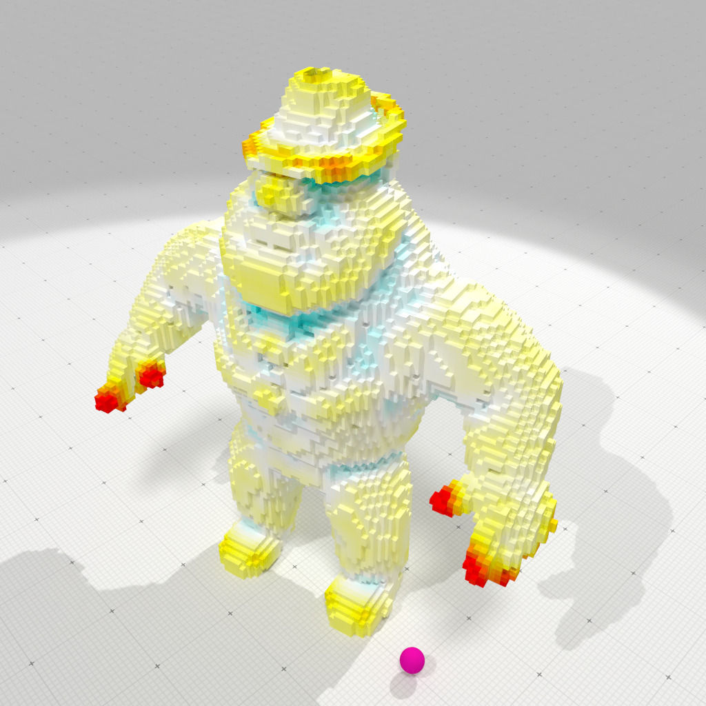

Loading...
Searching...
No Matches
geometry/meshes/vol-curvature-measures-icnc-3d.cpp
Computation of mean and Gaussiancurvatures on a mesh defined by a VOL digital file, using interpolated corrected curvature measures (based on the theory of corrected normal currents). It uses a digital normal vector estimator to improve curvature estimations.
# "Al" vol file /examples/geometry/meshes/vol-curvature-measures-icnc-3d ../examples/samples/Al.100.vol 2.0 0 1 0.33 0.1
outputs
- Domain size is 100 x 100 x 100 - digital shape has 70413 voxels. - surface has 21239 surfels. [SurfaceMesh (OK) #V=21278 #VN=0 #E=42522 #F=21239 #FN=0 E[IF]=4.00151 E[IV]=3.9968 E[IFE]=1.99793] - CTrivial normal t-ring=3 (discrete) Computed mean curvatures: min=-0.223179 max=0.415828 Computed Gaussian curvatures: min=-0.215905 max=0.164086
It also produces several OBJ files to display curvature estimation results, example-cnc-H.obj and example-cnc-G.obj as well as the associated MTL file.

Interpolated corrected mean curvature measure, r=2 | 
Interpolated corrected Gaussian curvature measure, r=2 |
- Note
- In opposition with Normal Cycle curvature measures, (interpolated) corrected curvature measures can take into account an external normal vector field to estimate curvatures with better accuracy.
#include <iostream>
#include <fstream>
#include <algorithm>
#include "DGtal/base/Common.h"
#include "DGtal/shapes/SurfaceMesh.h"
#include "DGtal/geometry/meshes/CorrectedNormalCurrentComputer.h"
#include "DGtal/helpers/Shortcuts.h"
#include "DGtal/helpers/ShortcutsGeometry.h"
#include "DGtal/io/writers/SurfaceMeshWriter.h"
#include "DGtal/io/colormaps/GradientColorMap.h"
#include "DGtal/io/colormaps/QuantifiedColorMap.h"
{
DGtal::GradientColorMap< double > gradcmap( min_value, max_value );
gradcmap.addColor( DGtal::Color( 0, 255, 255 ) );
gradcmap.addColor( DGtal::Color( 255, 255, 255 ) );
gradcmap.addColor( DGtal::Color( 255, 255, 0 ) );
gradcmap.addColor( DGtal::Color( 255, 0, 0 ) );
return gradcmap;
}
void usage( int argc, char* argv[] )
{
std::cout << "Usage: " << std::endl
<< "\t" << argv[ 0 ] << " <filename.vol> <R> <m> <M> <Hmax> <Gmax>" << std::endl
<< std::endl
<< "Computation of mean and Gaussian curvatures on a vol file, " << std::endl
<< "using interpolated corrected curvature measures (based " << std::endl
<< "on the theory of corrected normal currents)." << std::endl
<< "- builds the surface mesh from file <filename.vol>" << std::endl
<< "- <R> is the radius of the measuring balls" << std::endl
<< "- <m> is the min threshold value for the vol file" << std::endl
<< "- <M> is the max threshold value for the vol file" << std::endl
<< "- <Hmax> gives the colormap range [-Hmax,Hmax] for" << std::endl
<< " the output of mean curvature estimates" << std::endl
<< "- <Gmax> gives the colormap range [-Gmax,Gmax] for" << std::endl
<< " the output of mean curvature estimates" << std::endl
<< "It produces several OBJ files to display mean and" << std::endl
<< "Gaussian curvature estimation results: `example-cnc-H.obj`" << std::endl
<< "and `example-cnc-G.obj` as well as the associated MTL file." << std::endl;
}
{
if ( argc <= 1 )
{
usage( argc, argv );
return 0;
}
using namespace DGtal;
using namespace DGtal::Z3i;
// VOL file
std::string input = argv[ 1 ];
const double R = argc > 2 ? atof( argv[ 2 ] ) : 2.0; // radius of measuring ball
const int m = argc > 3 ? atoi( argv[ 3 ] ) : 0; // min threshold
const int M = argc > 4 ? atoi( argv[ 4 ] ) : 1; // max threshold
const double Hmax = argc > 5 ? atof( argv[ 5 ] ) : 0.33; // range mean curvature colormap
const double Gmax = argc > 6 ? atof( argv[ 6 ] ) : 0.1; // range Gaussian curvature colormap
// Read VOL file and build digital surface
auto params = SH::defaultParameters() | SHG::defaultParameters();
params( "thresholdMin", m )( "thresholdMax", M )( "closed", 1);
params( "t-ring", 3 )( "surfaceTraversal", "Default" );
auto bimage = SH::makeBinaryImage( input.c_str(), params );
if ( bimage == nullptr )
{
return 1;
}
auto sembedder = SH::getSCellEmbedder( K );
auto embedder = SH::getCellEmbedder( K );
auto surfels = SH::getSurfelRange( surface, params );
SM smesh;
std::vector< SM::Vertices > faces;
SH::Cell2Index c2i;
auto pointels = SH::getPointelRange( c2i, surface );
auto vertices = SH::RealPoints( pointels.size() );
std::transform( pointels.cbegin(), pointels.cend(), vertices.begin(),
[&] (const SH::Cell& c) { return embedder( c ); } );
{
SM::Vertices face;
for ( auto&& primal_vtx : primal_surfel_vtcs )
face.push_back( c2i[ primal_vtx ] );
faces.push_back( face );
}
faces.cbegin(), faces.cend() );
// Builds a CorrectedNormalCurrentComputer object onto the SurfaceMesh object
CNC cnc( smesh );
// Estimates normal vectors using Convolved Trivial Normal estimator
auto face_normals = SHG::getCTrivialNormalVectors( surface, surfels, params );
smesh.setFaceNormals( face_normals.cbegin(), face_normals.cend() );
// if ( smesh.vertexNormals().empty() )
// smesh.computeVertexNormalsFromFaceNormals();
// computes area, mean and Gaussian curvature measures
std::cout << "Compute mu0" << std::endl;
auto mu0 = cnc.computeMu0();
std::cout << "Compute mu1" << std::endl;
auto mu1 = cnc.computeMu1();
std::cout << "Compute mu2" << std::endl;
auto mu2 = cnc.computeMu2();
// estimates mean (H) and Gaussian (G) curvatures by measure normalization.
std::vector< double > H( smesh.nbFaces() );
std::vector< double > G( smesh.nbFaces() );
for ( auto f = 0; f < smesh.nbFaces(); ++f )
{
const auto b = smesh.faceCentroid( f );
const auto area = mu0.measure( b, R, f );
H[ f ] = cnc.meanCurvature ( area, mu1.measure( b, R, f ) );
G[ f ] = cnc.GaussianCurvature( area, mu2.measure( b, R, f ) );
}
auto G_min_max = std::minmax_element( G.cbegin(), G.cend() );
std::cout << "Computed mean curvatures:"
<< " min=" << *H_min_max.first << " max=" << *H_min_max.second
<< std::endl;
std::cout << "Computed Gaussian curvatures:"
<< " min=" << *G_min_max.first << " max=" << *G_min_max.second
<< std::endl;
// Remove normals for better blocky display.
smesh.vertexNormals() = SH::RealVectors();
smesh.faceNormals() = SH::RealVectors();
auto colorsH = SMW::Colors( smesh.nbFaces() );
auto colorsG = SMW::Colors( smesh.nbFaces() );
for ( auto i = 0; i < smesh.nbFaces(); i++ )
{
colorsH[ i ] = colormapH( H[ i ] );
colorsG[ i ] = colormapG( G[ i ] );
}
SMW::writeOBJ( "example-cnc-H", smesh, colorsH );
SMW::writeOBJ( "example-cnc-G", smesh, colorsG );
return 0;
}
Aim: This class template may be used to (linearly) convert scalar values in a given range into a colo...
Definition GradientColorMap.h:120
void addColor(const Color &color)
Aim: This class is used to simplify shape and surface creation. With it, you can create new shapes an...
Definition ShortcutsGeometry.h:75
Aim: This class is used to simplify shape and surface creation. With it, you can create new shapes an...
Definition Shortcuts.h:105
std::ostream & error()
std::ostream & info()
DGtal::GradientColorMap< double > makeColorMap(double min_value, double max_value)
[curvature-comparator-Includes]
Definition curvature-comparator-ii-cnc-3d.cpp:89
Z3i this namespace gathers the standard of types for 3D imagery.
DGtal is the top-level namespace which contains all DGtal functions and types.
Definition ClosedIntegerHalfPlane.h:49
QuantifiedColorMap< TColorMap > makeQuantifiedColorMap(TColorMap colormap, int nb=50)
Definition QuantifiedColorMap.h:113
std::pair< typename graph_traits< DGtal::DigitalSurface< TDigitalSurfaceContainer > >::vertex_iterator, typename graph_traits< DGtal::DigitalSurface< TDigitalSurfaceContainer > >::vertex_iterator > vertices(const DGtal::DigitalSurface< TDigitalSurfaceContainer > &digSurf)
Aim: Utility class to compute curvature measures induced by (1) a corrected normal current defined by...
Definition CorrectedNormalCurrentComputer.h:70
Aim: An helper class for writing mesh file formats (Waverfront OBJ at this point) and creating a Surf...
Definition SurfaceMeshWriter.h:65
Aim: Represents an embedded mesh as faces and a list of vertices. Vertices may be shared among faces ...
Definition SurfaceMesh.h:92